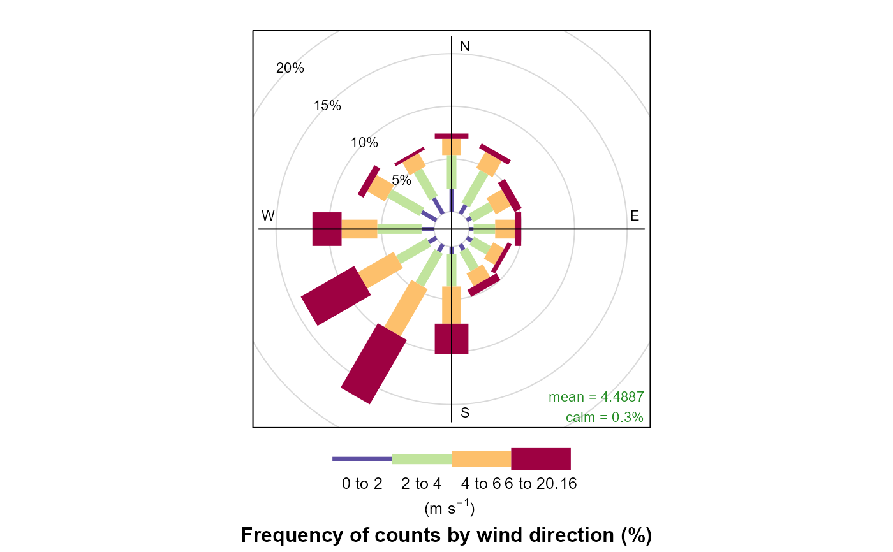
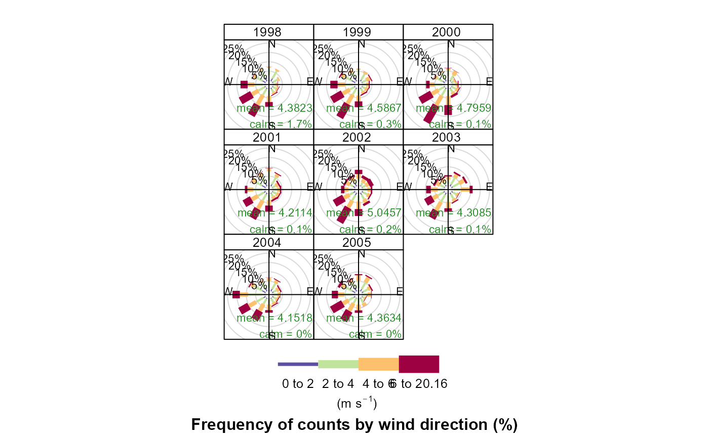
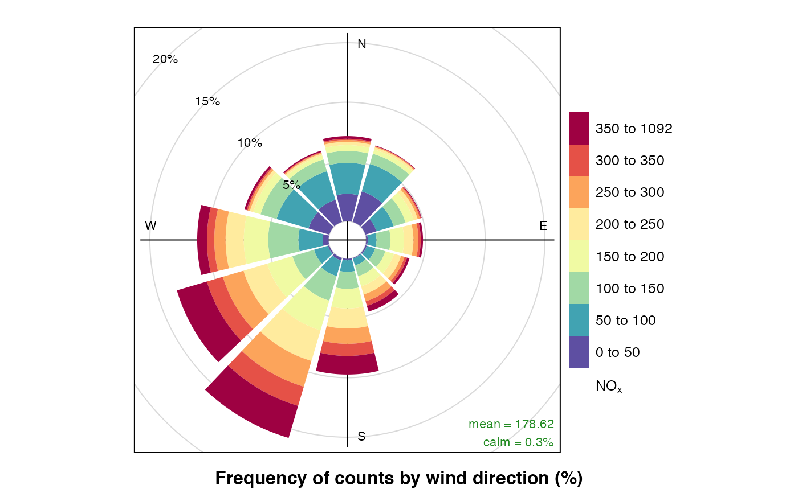
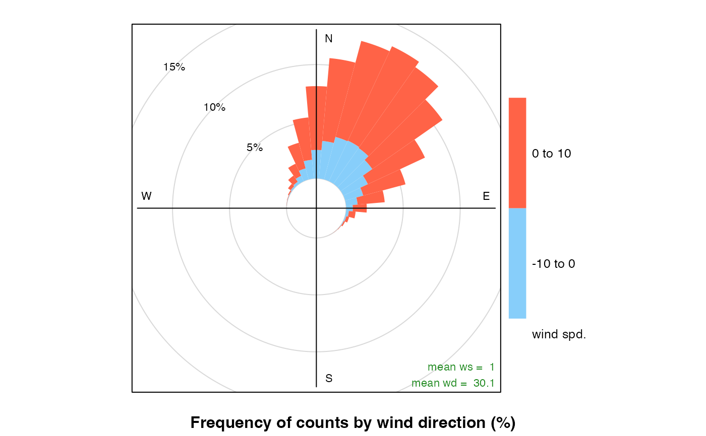

The traditional wind rose plot that plots wind speed and wind direction by different intervals. The pollution rose applies the same plot structure but substitutes other measurements, most commonly a pollutant time series, for wind speed.
windRose(mydata, ws = "ws", wd = "wd", ws2 = NA, wd2 = NA, ws.int = 2, angle = 30, type = "default", bias.corr = TRUE, cols = "default", grid.line = NULL, width = 1, seg = NULL, auto.text = TRUE, breaks = 4, offset = 10, normalise = FALSE, max.freq = NULL, paddle = TRUE, key.header = NULL, key.footer = "(m/s)", key.position = "bottom", key = TRUE, dig.lab = 5, statistic = "prop.count", pollutant = NULL, annotate = TRUE, angle.scale = 315, border = NA, ...) pollutionRose(mydata, pollutant = "nox", key.footer = pollutant, key.position = "right", key = TRUE, breaks = 6, paddle = FALSE, seg = 0.9, normalise = FALSE, ...)
| mydata | A data frame containing fields |
|---|---|
| ws | Name of the column representing wind speed. |
| wd | Name of the column representing wind direction. |
| ws2 | The user can supply a second set of wind speed and wind direction values with which the first can be compared. See details below for full explanation. |
| wd2 | see |
| ws.int | The Wind speed interval. Default is 2 m/s but for
low met masts with low mean wind speeds a value of 1 or 0.5 m/s
may be better. Note, this argument is superseded in
|
| angle | Default angle of “spokes” is 30. Other
potentially useful angles are 45 and 10. Note that the width of
the wind speed interval may need adjusting using |
| type |
It is also possible to choose Type can be up length two e.g. |
| bias.corr | When |
| cols | Colours to be used for plotting. Options include
“default”, “increment”, “heat”,
“jet”, “hue” and user defined. For user defined
the user can supply a list of colour names recognised by R (type
|
| grid.line | Grid line interval to use. If |
| width | For |
| seg | For |
| auto.text | Either |
| breaks | Most commonly, the number of break points for wind
speed in |
| offset | The size of the 'hole' in the middle of the plot, expressed as a percentage of the polar axis scale, default 10. |
| normalise | If |
| max.freq | Controls the scaling used by setting the maximum value for the radial limits. This is useful to ensure several plots use the same radial limits. |
| paddle | Either |
| key.header | Adds additional text/labels above and/or below
the scale key, respectively. For example, passing
|
| key.footer | see |
| key.position | Location where the scale key is to plotted. Allowed arguments currently include “top”, “right”, “bottom” and “left”. |
| key | Fine control of the scale key via |
| dig.lab | The number of signficant figures at which scientific number formatting is used in break point and key labelling. Default 5. |
| statistic | The |
| pollutant | Alternative data series to be sampled instead of
wind speed. The |
| annotate | If |
| angle.scale | The wind speed scale is by default shown at a
315 degree angle. Sometimes the placement of the scale may
interfere with an interesting feature. The user can therefore
set |
| border | Border colour for shaded areas. Default is no border. |
| ... | For |
As well as generating the plot itself, windRose and
pollutionRose also return an object of class
“openair”. The object includes three main components:
call, the command used to generate the plot; data,
the data frame of summarised information used to make the plot;
and plot, the plot itself. If retained, e.g. using
output <- windRose(mydata), this output can be used to
recover the data, reproduce or rework the original plot or
undertake further analysis.
An openair output can be manipulated using a number of generic
operations, including print, plot and
summarise.
Summarised proportions can also be extracted directly using the
$data operator, e.g. object$data for output
<- windRose(mydata). This returns a data frame with three set
columns: cond, conditioning based on type;
wd, the wind direction; and calm, the
statistic for the proportion of data unattributed to any
specific wind direction because it was collected under calm
conditions; and then several (one for each range binned for the
plot) columns giving proportions of measurements associated with
each ws or pollutant range plotted as a discrete
panel.
For windRose data are summarised by direction, typically by
45 or 30 (or 10) degrees and by different wind speed categories.
Typically, wind speeds are represented by different width
"paddles". The plots show the proportion (here represented as a
percentage) of time that the wind is from a certain angle and wind
speed range.
By default windRose will plot a windRose in using "paddle"
style segments and placing the scale key below the plot.
The argument pollutant uses the same plotting structure but
substitutes another data series, defined by pollutant, for
wind speed.
The option statistic = "prop.mean" provides a measure of
the relative contribution of each bin to the panel mean, and is
intended for use with pollutionRose.
pollutionRose is a windRose wrapper which brings
pollutant forward in the argument list, and attempts to
sensibly rescale break points based on the pollutant data
range by by-passing ws.int.
By default, pollutionRose will plot a pollution rose of
nox using "wedge" style segments and placing the scale key
to the right of the plot.
It is possible to compare two wind speed-direction data sets using
pollutionRose. There are many reasons for doing so e.g. to
see how one site compares with another or for meteorological model
evaluation. In this case, ws and wd are considered
to the the reference data sets with which a second set of wind
speed and wind directions are to be compared (ws2 and
wd2). The first set of values is subtracted from the second
and the differences compared. If for example, wd2 was
biased positive compared with wd then pollutionRose
will show the bias in polar coordinates. In its default use, wind
direction bias is colour-coded to show negative bias in one colour
and positive bias in another.
windRose and pollutionRose both use
drawOpenKey to produce scale keys.
Applequist, S, 2012: Wind Rose Bias Correction. J. Appl. Meteor. Climatol., 51, 1305-1309.
This paper seems to be the original?
Droppo, J.G. and B.A. Napier (2008) Wind Direction Bias in Generating Wind Roses and Conducting Sector-Based Air Dispersion Modeling, Journal of the Air & Waste Management Association, 58:7, 913-918.
See drawOpenKey for fine control of the
scale key.
See polarFreq for a more flexible version that
considers other statistics and pollutant concentrations.
David Carslaw (with some additional contributions by Karl Ropkins)
# load example data from package data(mydata) # basic plot windRose(mydata)  # one windRose for each year windRose(mydata,type = "year")  # windRose in 10 degree intervals with gridlines and width adjusted if (FALSE) { windRose(mydata, angle = 10, width = 0.2, grid.line = 1) } # pollutionRose of nox pollutionRose(mydata, pollutant = "nox")  ## source apportionment plot - contribution to mean if (FALSE) { pollutionRose(mydata, pollutant = "pm10", type = "year", statistic = "prop.mean") } ## example of comparing 2 met sites ## first we will make some new ws/wd data with a postive bias mydata$ws2 = mydata$ws + 2 * rnorm(nrow(mydata)) + 1 mydata$wd2 = mydata$wd + 30 * rnorm(nrow(mydata)) + 30 ## need to correct negative wd id <- which(mydata$wd2 < 0) mydata$wd2[id] <- mydata$wd2[id] + 360 ## results show postive bias in wd and ws pollutionRose(mydata, ws = "ws", wd = "wd", ws2 = "ws2", wd2 = "wd2") 